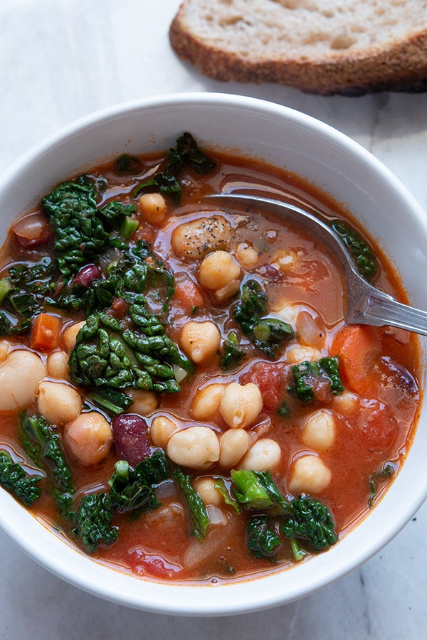

Czas przygotowania: do 30 minut
Składniki na 4 - 5 porcji:
1 cebula lub 1/2 pora
1 marchewka lub 1/4 selera
olej lub oliwa
1 łyżeczka papryki wędzonej
1/4 łyżeczki rozmarynu lub tymianku lub oregano
szczypta cayenne
4 puszki strączków (każda po 400 g lub 6 szklanek ugotowanych strączków)
1 1/2 litra bulionu
300 g kapusty białej, włoskiej lub jarmużu
2 ząbki czosnku
3 – 4 łyżki oliwy lub oleju
2 puszki pomidorów krojonych (400 g)
sól i pieprz
Przygotowanie:
Cebulę pokroić w kostkę, marchew obrać i pokroić w półtalarki. W dużym garnku rozgrzać niewielką ilość oleju, dodać cebulę wraz z marchewką i smażyć przez 2 – 3 minuty, do czasu, aż cebula zacznie robić się złota. Po tym czasie dodać paprykę wędzoną, rozmaryn i szczyptę cayenne, kilka razy zamieszać i dodać odcedzone strączki oraz bulion. Garnek przykryć i zupę gotować przez 15 minut. W międzyczasie na patelnię wlać oliwę, na zimny tłuszcz dodać obrane, pozostawione w całości ząbki czosnku. Podgrzewać do momentu, aż czosnek zacznie się podsmażać. Smażyć tak przez 3 – 4 minuty na małym ogniu, w międzyczasie przewrócić ząbki. Czosnek jest gotowy, kiedy jest intensywnie złoty i wyraźnie pachnie. Wtedy do patelni dodać krojone pomidory, sporą szczyptę soli oraz czarnego pieprzu (naprawdę sporo) i dusić bez przykrycia na średnim ogniu przez 10 – 12 minut. Na koniec posiekać kapustę. Podduszone, zredukowane pomidory wlać do zupy, dodać kapustę i gotować ostatnie 3 – 5 minut. Doprawić do smaku solą oraz pieprzem i podawać.
Propozycja podania:
